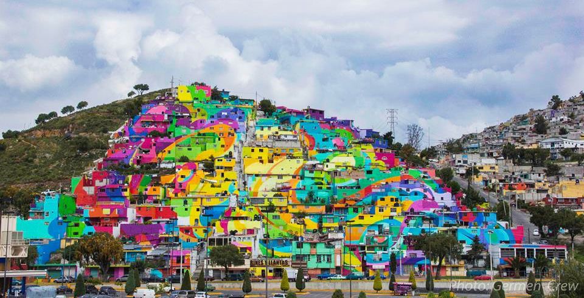

“La estabilidad y el progreso de la sociedad dependen en grado decisivo de la calidad humana de sus componentes”
Arturo Illi
La regeneración urbana es una compleja combinación de factores sociales, económicos, ambientales, de planeación y gestión, que para su correcta implementación debe de estar acompañada de estrategias que permitan reconocer las problemáticas estructurales que han generado los procesos de deterioro y ser sensibles a las tendencias urbanas que cada sector de la ciudad necesita.
El objetivo de la regeneración es combinar estos factores de modo que mejore la calidad de vida, la estabilidad económica, el consumo de energía y dotaciones de los centros urbanos.
La regeneración, implica recuperar la funcionalidad y la revitalización de la trama urbana del municipio, para lograr el modelo de ciudad sostenible que en la actualidad se quiere alcanzar. Un sector importante para regenerar urbanamente es el Centro Histórico de la ciudad que constituye la parte más frágil de la estructura urbana del municipio por los factores que influyen en el como el económico, social y político, cada uno con influencia y preponderancia muy específica.
Se pueden implementar diferentes tratamientos según sea el caso de la estructura urbana a regenerar por ejemplo:
- La restauración que implica la voluntad de proporcionar estructuras nuevas a una zona urbana concreta o a un barrio en específico mediante la demolición y la liberación de suelo en donde se pueden asentar infraestructuras y equipamientos que sean necesarios, teniendo como principio la conservación del patrimonio edificado, por ejemplo solo se trata de modificar el estado pero no el aspecto de los edificios antiguos.
- La rehabilitación, que abarca diferentes operaciones; como la conservación, el equipar y la restauración son acciones que se necesitan implementar para tener una ciudad con un urbanismo sostenible.
La rehabilitación integral debe trascender las habituales consideraciones urbanísticas, arquitectónicas y de conservación del Patrimonio Histórico, debe brindar soluciones adecuadas para resolver los problemas de carácter social, económico y asistencial de la población vulnerable. Consiste en implementar un conjunto de acciones coherentes y programadas, destinadas a potenciar los valores urbanos, ambientales, socioeconómicos y funcionales de una zona urbana determinada, con la finalidad de mejorar la calidad de vida de la población residente, con acciones encaminadas al mejoramiento del equipamiento e infraestructura urbana que incrementen los niveles de habitabilidad, servicios, dotaciones y espacios comunitarios que sean necesarios para tener una mejor calidad de vida.
Al implementar y poner en marcha un proyecto de regeneración urbana integral se puede mejorar sustancialmente la estructura socioeconómica de una zona urbana degradada y mejorar su integración con el resto del territorio.

Proyecto de regeneración urbana mediante el arte público en la ciudad de Pachuca, dentro del barrio de Palmitas, esta colonia marginal de la capital hidalguense se caracterizaba por sus altos niveles de violencia provocada en su mayoría por dos pandillas enemigas. La implementación de este programa unió a los habitantes de la zona y creó una identidad común, disminuyendo la violencia involucrando a los jóvenes en actividades comunitarias y talleres.
Referencias
- Regeneración urbana, espacio público y sentido de lugar. Un caso de estudio en la ciudad de México, Ortiz Guitart Anna, 2006.
- Cascos Históricos: regeneración urbana. El caso de Bilbao Ibarlucea Bustamante Esther, 2001.